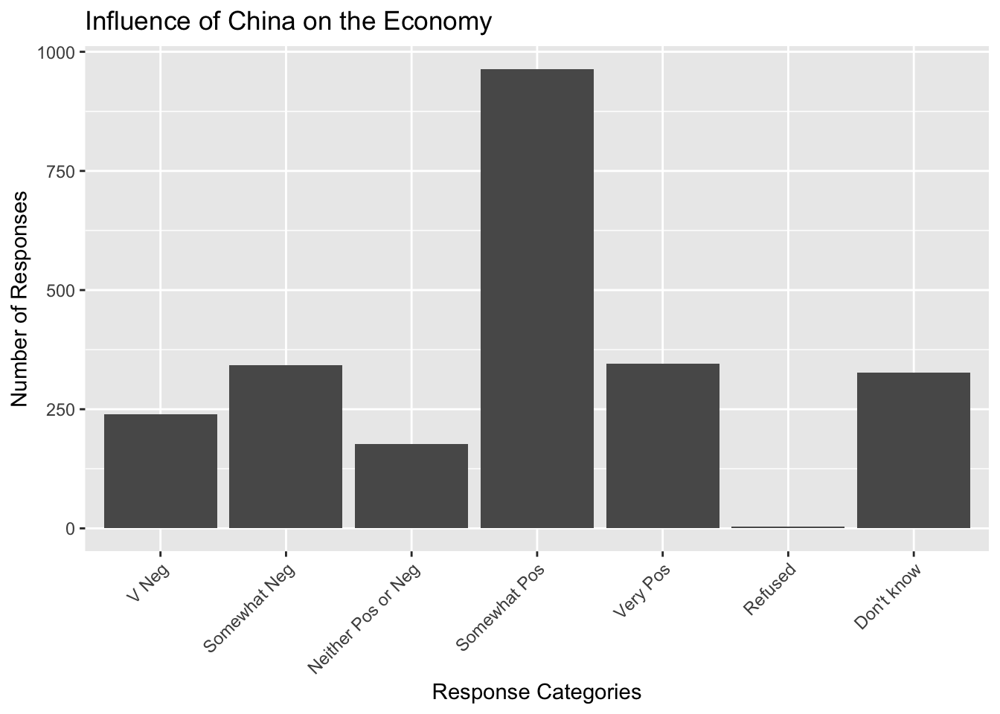
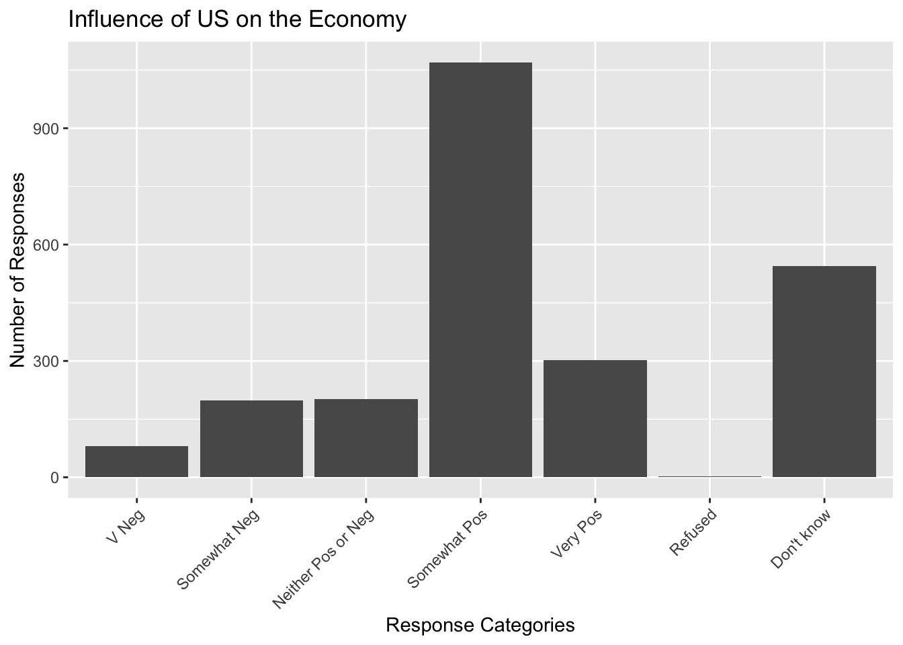
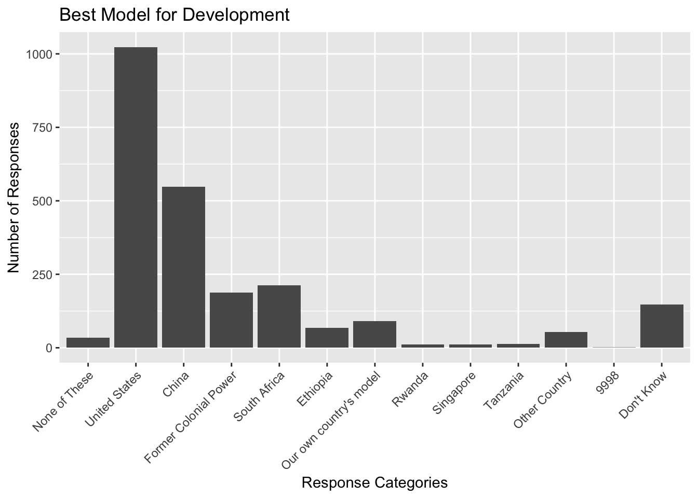

AR9 <- read_sav(destfile)
AR8 <- read_sav(destfile2)Research Design
::: {.cell}
```{.r .cell-code}
library(haven)
library(tidyverse)
```
::: {.cell-output .cell-output-stderr}
```
── Attaching core tidyverse packages ──────────────────────── tidyverse 2.0.0 ──
✔ dplyr 1.1.4 ✔ readr 2.1.5
✔ forcats 1.0.0 ✔ stringr 1.5.1
✔ ggplot2 3.5.1 ✔ tibble 3.2.1
✔ lubridate 1.9.3 ✔ tidyr 1.3.1
✔ purrr 1.0.2
── Conflicts ────────────────────────────────────────── tidyverse_conflicts() ──
✖ dplyr::filter() masks stats::filter()
✖ dplyr::lag() masks stats::lag()
ℹ Use the conflicted package (<http://conflicted.r-lib.org/>) to force all conflicts to become errors
```
:::
```{.r .cell-code}
library(gt)
library(dplyr)
#barometer data round 9
url <- "https://www.afrobarometer.org/wp-content/uploads/2023/06/afrobarometer_release-dataset_ken_r9_en_2023-03-01.sav"
destfile <- "afrobarometer_release-dataset_ken_r9_en_2023-03-01.sav"
download.file(url, destfile = destfile, mode = "wb")
#file.exists(destfile)
#barometer data round 8
url2 <- "https://www.afrobarometer.org/wp-content/uploads/2022/02/ken_r8.data_.new_.final_.wtd_release.31mar21.sav"
destfile2 <- "ken_r8.data_.new_.final_.wtd_release.31mar21.sav"
download.file(url2, destfile = destfile2, mode = "wb")
file.exists(destfile)
```
::: {.cell-output .cell-output-stdout}
```
[1] TRUE
```
:::
```{.r .cell-code}
# Reading in the SPSS file
data2 <- read_sav(destfile2)
```
:::
</div>My research question explores how public opinion in Kenya differs regarding Chinese versus Western influence (US and Britain) , especially as their knowledge about competition between these global powers intensifies in Africa. This topic is significant because Kenya has emerged as a key battleground for geopolitical and economic influence, with both China and Western nations investing heavily in infrastructure, trade, and development projects. China’s Belt and Road Initiative has financed major projects like the Standard Gauge Railway, while Western countries, including the U.S. and European nations, continue to promote democratic governance, human rights, and market-driven economic partnerships.
Understanding how Kenyans perceive Chinese and Western (U.S. and British) influence—whether China is viewed as a driver of economic growth or a form of neocolonialism, and whether Western involvement is seen as beneficial or overly conditional—offers deeper insights into modern African geopolitics. Existing studies, such as Linda Benabdallah Going Beyond Binary Narratives of China–Africa Relations, examine these relationships from a macro perspective, while research by Hulby, Li, and Springman explores how geopolitical competition shapes perceptions of aid and investment. Building on these works, my study investigates how Kenyans interpret Chinese-led infrastructure projects and trade relations compared to Western-backed governance initiatives and economic partnerships, particularly as awareness of global power competition intensifies.
Hypothesis:
As geopolitical competition between China and Western powers (the US ) in Africa intensifies, Kenyan public opinion will increasingly favor Chinese influence over Western influence, driven by perceptions that China’s approach delivers more tangible economic and developmental benefits with fewer political conditions.
The hypothesis is grounded in the idea that both geopolitical context and perceived immediate benefits of foreign involvement shape opinions about the necessity of one global power’s influence over another. Specifically, it assumes that: Kenyans who view Chinese infrastructure investments as a direct catalyst for economic growth will place less value on Western influence, as they may see China’s involvement as more immediately beneficial to their country’s development needs. The tangible outcomes of Chinese projects, such as improved infrastructure and economic growth, might outweigh the perceived conditionality of Western investments, which are often tied to political and governance reforms. The growing awareness of the competition between China and the West for influence in Africa might influence how Kenyans perceive these global powers. Those with greater awareness of this competition may have more nuanced views, potentially aligning with geopolitical interests (e.g., viewing Chinese investments as a strategic move to gain economic leverage over the West, or viewing Western influence as a counterbalance to China’s growing power).
- GGplots
# Plotting responses of influence of China Eonomy
ggplot(AR9, aes(x = factor(Q78A))) +
geom_bar() +
labs(title = "Influence of China on the Economy",
x = "Response Categories",
y = "Number of Responses") +
scale_x_discrete(labels = c("1" = "V Neg", "2" = "Somewhat Neg", "3" = "Neither Pos or Neg", "4" = "Somewhat Pos", "5" = "Very Pos", "8" = "Refused", "9" = "Don't know", "-1" = "Missing")) +
theme(axis.text.x = element_text(angle = 45, hjust = 1)) # Slants x-axis labels at 45 degrees
# Plotting responses of influence of China Eonomy
ggplot(AR9, aes(x = factor(Q78B))) +
geom_bar() +
labs(title = "Influence of US on the Economy",
x = "Response Categories",
y = "Number of Responses") +
scale_x_discrete(labels = c("1" = "V Neg", "2" = "Somewhat Neg", "3" = "Neither Pos or Neg", "4" = "Somewhat Pos", "5" = "Very Pos", "8" = "Refused", "9" = "Don't know", "-1" = "Missing")) +
theme(axis.text.x = element_text(angle = 45, hjust = 1)) # Slants x-axis labels at 45 degrees
#Plotting public opinion around the best model for future development
ggplot(AR8, aes(x = factor(Q69A))) +
geom_bar() +
labs(title = "Best Model for Development",
x = "Response Categories",
y = "Number of Responses") +
scale_x_discrete(labels = c("0" = "None of These", "1" = "United States", "2" = "China", "3" = "Former Colonial Power", "5" = "South Africa", "6" = "Ethiopia", "7" = "Our own country's model", "300" = "Rwanda", "301" = "Singapore", "302" = "Tanzania", "9995" = "Other Country", "9988" = "Refused", "9999" = "Don't Know", "-1" = "Missing")) +
theme(axis.text.x = element_text(angle = 45, hjust = 1)) # Slants x-axis labels at 45 degrees
- This study will use data from the Afrobarometer surveys and the survey conducted for How Geopolitics Influences Winning Hearts and Minds, which capture the public’s perceptions and opinions on issues of governance, economics, and foreign influence in Kenya. The survey responses will be analyzed to understand how perceptions of Chinese and Western influence vary based on the awareness of geopolitical competition between these powers.
Independent Variable: Perception of Chinese and economic influence measures how positively Kenyans view the impact of relations with China. Respondents from the Afrobarometer surveys were asked to rate their perceptions on a scale (e.g from “very negative” to “very positive”).
Dependent Variable: Perception of Western influence—measured by how positively Kenyans view the impact of relations with the US and the model of development they believe is best to follow.
Moderating variable:e: The moderating variable will capture the extent to which respondents view foreign investments through a geopolitical lens. This variable will assess the influence of perceived geopolitical competition between China and the West on the way Kenyan respondents interpret investments and partnerships from each power.
- I will utilize an OLS regression model to test my hypothesis. The dependent variable Yi represents the difference score in favorability ratings between Chinese and Western influence. The independent variable GeoComp would capture the individual’s perceptions of geopolitical competition between China and the west. The control variables Xji account for other factors (like age, education, income, etc.) that might influence public opinion.
Thus, it tests whether variations in perceived geopolitical competition are statistically associated with differences in public opinion toward Chinese versus Western influence.
Regression Model: Yi=β0+β1GeoCompi+j=2∑kβjXji+εi
::: {.cell}
```{.r .cell-code}
#Fit an OLS regression model model
# model <- lm(Yi ~ GeoComp + age + education + income + region, data = data)
#Yi ~ GeoComp + age + education + income + region: This specifies that Yi (the dependent variable) is predicted by GeoComp (the independent variable) and control variables like age, education, income, and region.
```
:::